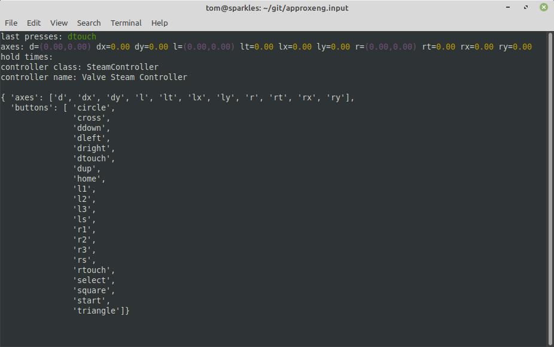

Command-line tools
When installed, this library provides a set of command-line tools. Note that if you’re running in a virtual environment you’ll need to activate the environment before these are available. They can be run like any other command from a terminal, and do not require a windowing system so you should be able to run these remotely over SSH, for example.
Interactive controller test
The approxeng_input_show_controls tool will wait for the first controller to connect, then show a curses-based GUI where you can test reception of axis and button events. It’s also a good way to check that a newly profiled controller is behaving as expected. In previous versions of the library this was something you could run from the scripts directory in the source, it’s been moved to work for anyone installing the library through pip.
> approxeng_input_show_controls
With a controller connected, this will display something like the following:
Profile a new controller
If you’ve got a relatively simple controller but one that’s not already recognised by the library, the profiling tool allows you to create a configuration interactively. See Profiling and Testing Controllers for more details.
> approxeng_input_profile
List known controller types
Shows all known controller classes, including whether these are custom or profiled along with the corresponding product and vendor IDs.
> approxeng_input_classes
┌────────┬─────────┬───────────────────────────────────────────────────────────────────┬────────────────────┐
│ Vendor │ Product │ Controller Name │ Class │
├────────┼─────────┼───────────────────────────────────────────────────────────────────┼────────────────────┤
│ 045e │ 02ea │ Microsoft X-Box One S pad │ ProfiledController │
│ 045e │ 02fd │ Xbox Wireless Controller │ ProfiledController │
│ 046d │ c62b │ 3Dconnexion SpaceMouse Pro │ SpaceMousePro │
│ 054c │ 0268 │ Sony DualShock3 (Playstation 3) controller │ DualShock3 │
│ 054c │ 05c4 │ Sony DualShock4 (Playstation 4) controller │ DualShock4 │
│ 054c │ 09cc │ Sony DualShock4 (Playstation 4) controller │ DualShock4 │
│ 057e │ 0306 │ Nintendo WiiMote controller │ WiiMote │
│ 057e │ 0330 │ Nintendo Wii Remote Pro Controller │ ProfiledController │
│ 057e │ 2006 │ Nintendo Switch JoyCon controller (Left) │ SwitchJoyConLeft │
│ 057e │ 2007 │ Nintendo Switch JoyCon controller (Right) │ SwitchJoyConRight │
│ 0e6f │ 0128 │ Performance Designed Products Rock Candy Wireless Gamepad for PS3 │ ProfiledController │
│ 2563 │ 0526 │ PiHut PS3-alike controller │ PiHut │
│ 2563 │ 0575 │ PiHut PS3-alike controller │ PiHut │
│ 28de │ 1142 │ Valve Steam Controller │ SteamController │
│ 2dc8 │ 6100 │ 8Bitdo SF30 Pro │ SF30Pro │
└────────┴─────────┴───────────────────────────────────────────────────────────────────┴────────────────────┘
List available devices
As a quick check to see what joystick-like devices exist on your system, you can do this:
> approxeng_input_list_devices
{ 'axes': { 'ABS_HAT0X': { 'code': 16,
'flat': 0,
'fuzz': 256,
'max': 32767,
'min': -32767,
'res': 1638},
'ABS_HAT0Y': { 'code': 17,
'flat': 0,
'fuzz': 256,
'max': 32767,
'min': -32767,
'res': 1638},
'ABS_HAT2X': {'code': 20, 'flat': 0, 'fuzz': 0, 'max': 255, 'min': 0, 'res': 51},
'ABS_HAT2Y': {'code': 21, 'flat': 0, 'fuzz': 0, 'max': 255, 'min': 0, 'res': 51},
'ABS_RX': {'code': 3, 'flat': 0, 'fuzz': 256, 'max': 32767, 'min': -32767, 'res': 1638},
'ABS_RY': {'code': 4, 'flat': 0, 'fuzz': 256, 'max': 32767, 'min': -32767, 'res': 1638},
'ABS_X': {'code': 0, 'flat': 0, 'fuzz': 0, 'max': 32767, 'min': -32767, 'res': 51},
'ABS_Y': {'code': 1, 'flat': 0, 'fuzz': 0, 'max': 32767, 'min': -32767, 'res': 51}},
'bus': 3,
'buttons': { 289: 'BTN_THUMB',
290: 'BTN_THUMB2',
304: ['BTN_A', 'BTN_GAMEPAD', 'BTN_SOUTH'],
305: ['BTN_B', 'BTN_EAST'],
307: ['BTN_NORTH', 'BTN_X'],
308: ['BTN_WEST', 'BTN_Y'],
310: 'BTN_TL',
311: 'BTN_TR',
312: 'BTN_TL2',
313: 'BTN_TR2',
314: 'BTN_SELECT',
315: 'BTN_START',
316: 'BTN_MODE',
317: 'BTN_THUMBL',
318: 'BTN_THUMBR',
336: ['BTN_GEAR_DOWN', 'BTN_WHEEL'],
337: 'BTN_GEAR_UP',
544: 'BTN_DPAD_UP',
545: 'BTN_DPAD_DOWN',
546: 'BTN_DPAD_LEFT',
547: 'BTN_DPAD_RIGHT'},
'fn': '/dev/input/event26',
'name': 'Wireless Steam Controller',
'path': '/dev/input/event26',
'phys': 'usb-0000:0b:00.3-2.4.1.2/input1',
'product': 4418,
'rel_axes': None,
'uniq': 'XXXXXXXXXX',
'unique_name': 'XXXXXXXXXX',
'vendor': 10462,
'version': 273}
In this case there’s a single Steam Controller attached, and the command is showing a summary of the axes and buttons it’s declaring. This isn’t the same as the set of controls the library will use for this controller, but it’ll give you an idea for a new device whether it’s being recognized at all, and what kind of resources it’s exposing. You only really need to do this if you’re having issues getting something to work with the library and think it might be because the device isn’t connecting properly.
Debug system device nodes
You almost certainly do not need this, but if you’re writing a controller class for something with extra LEDs, this command will show the available LED and power system devices for everything currently connected:
> approxeng_input_scan_sys
{ 'leds': { 'usb-0000:0b:00.3-2.4.1.2': { 'capslock': '/sys/class/leds/input31::capslock/brightness',
'compose': '/sys/class/leds/input31::compose/brightness',
'kana': '/sys/class/leds/input31::kana/brightness',
'numlock': '/sys/class/leds/input31::numlock/brightness',
'scrolllock': '/sys/class/leds/input31::scrolllock/brightness'},
'usb-0000:0b:00.3-2.4.4.6': { 'capslock': '/sys/class/leds/input15::capslock/brightness',
'numlock': '/sys/class/leds/input15::numlock/brightness',
'scrolllock': '/sys/class/leds/input15::scrolllock/brightness'},
'usb-0000:0b:00.3-3': { 'capslock': '/sys/class/leds/input2::capslock/brightness',
'numlock': '/sys/class/leds/input2::numlock/brightness',
'scrolllock': '/sys/class/leds/input2::scrolllock/brightness'}},
'power': {}}
In this case it’s just picking up the LEDs on my mouse and keyboards, but if you were to connect a controller like the DualShock4 you’d see the corresponding devices here. In the vast majority of cases though you don’t need to use this tool!